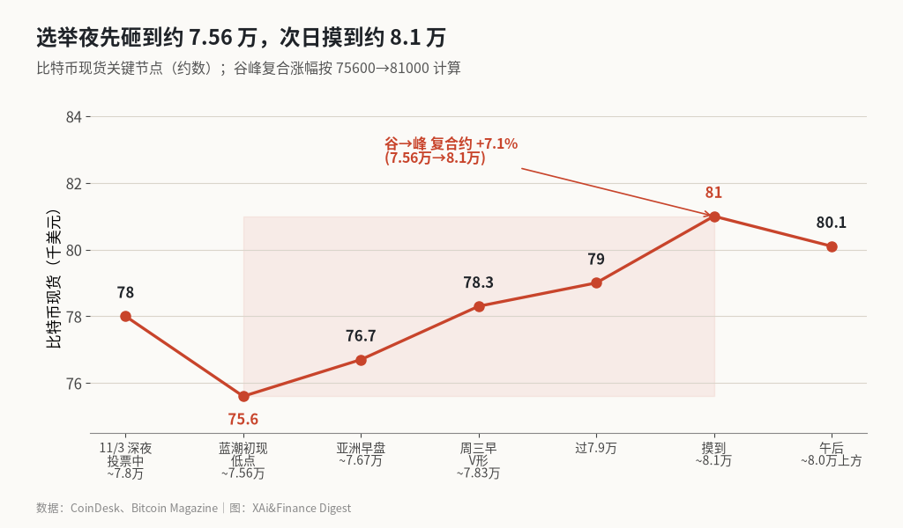
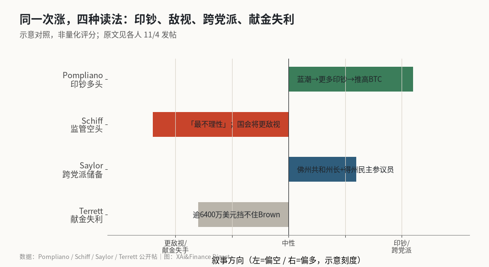

蓝潮夜比特币先砸后冲 8.1 万：价格坐实了，两种解释还在打架
民主党横扫国会当晚，BTC 一度跌至约 7.56 万美元，次日 V 形反弹先过约 7.9 万再摸到约 8.1 万，谷峰复合约 +7.1%。Pompliano 押「更多印钞」，Schiff 骂「最不理性」；Saylor 用跨党派州储备淡化冲击，Terrett 则指出逾 6400 万美元挡不住 Brown 回参院。
这篇想回答三件事：选举夜现货到底怎么走的，涨回来被读成印钞利好还是监管恐慌解除，以及政治献金失利和立法前景能不能被一夜行情抹掉。
硬事实只有一条。价格先砸后冲是坐实的：CoinDesk 记录蓝潮初现时短暂跌至约 7.57 万美元，Bitcoin Magazine 把低点放在约 7.56 万美元，随后反弹先过约 7.9 万、再摸到约 8.1 万，午后回落到 8 万上方。我按 7.56 万到 8.1 万复算，谷峰约 +7.1%。解释却立刻分裂——一边是流动性多头，一边是监管空头。说白了，行情回答了「涨没涨」，没回答「为什么涨、能不能续」。
我的读法偏保守：把这根 V 形先记成「结果落地后的回补」，不要急着升格成政策拐点。后面几节把价格、叙事和资金立法三条线拆开，能对上的留，对不上的标明。
选举夜现货时间线

投票日深夜，比特币一度接近 7.8 万美元。蓝潮结果陆续确认后，现货在美东约 22 时前后砸到谷底：CoinDesk 写约 7.57 万，Bitcoin Magazine 写约 7.56 万。⚠️ 两家低点差约 100 美元，下文谷峰复合按 7.56 万→8.1 万计。亚洲早盘回到约 7.67 万；周三早间走出 V 形，CoinDesk 当时报约 7.83 万。Bitcoin Magazine 随后连发两帖：先「跃过 7.9 万美元」，再「冲上 8.1 万美元」。美东午后价格从高点回落，仍站在 8 万上方，24 小时涨幅约 3%。
谷到峰大约 12 个小时。Bitcoin Magazine 按自家统计写波幅约 7.3%；我用整数节点 75600→81000，得到 81000÷75600−1≈7.1%。我不打算在小数点上较劲，量级一致就够用。若从投票日深夜的约 7.8 万算到次日高点 8.1 万，复合只有约 +3.8%；真正吓人的是中间那一截下砸，再连着一段逼空式回补。
同一段行情里，杠杆空头被清算的数字也不小。Bitcoin Magazine 援引的数据显示，24 小时约 9.5 亿美元加密杠杆仓位被清算，其中做空约 5.6 亿；比特币相关约 4.03 亿，约四分之三是空头。CryptoQuant 首席执行官 Ki Young Ju 还提到，单小时就有约 2.15 亿美元比特币空头爆仓。反弹有价格，也有被迫买回。
大盘当天也在做同类动作。道指一度上涨约 3%，标普与纳指收回隔夜跌幅；布伦特与 WTI 原油跌幅靠近 9%。Vice President Vance 公开把共和党失利归到伊朗战争，油价顺势松动。宏观画面是：政治不确定性落地、风险资产回补、通胀交易降温。比特币夹在中间，看起来像「风险偏好回来了」，但还不能直接写成「监管利空已被消化」。
印钞多头与监管空头对照表
| 说话人 | 方向 | 原话核心 |
|---|---|---|
| Anthony Pompliano | 多 | 蓝潮将带来更多印钞，进而推高比特币、黄金与生产性土地；「别跟印钞机作对」 |
| Peter Schiff | 空 | 民主党压倒性胜利后，比特币上涨是「最不理性」的反应；民主党国会将对加密更敌视，并称 2028 年若再拿下白宫，战略储备里的比特币会被卖掉 |
| Michael Saylor | 淡化党派 | 佛州选出支持美国比特币储备的共和党州长，得州选出曾投票支持本州比特币储备的民主党参议员，「持有比特币的理由跨越党派」 |
| Eleanor Terrett | 行业承压 | 中期对共和党与加密行业整体艰难；逾 6400 万美元未能阻止 Sherrod Brown 重返参议院，后者可能拿到对加密有管辖权的委员会领导岗位 |

Pompliano 的链条最短：蓝潮→财政更松→印钞加速→抗通胀资产涨。这条叙事不需要国会立刻通过任何加密法案，它赌的是宏观流动性。Schiff 走另一条：党派换手会改监管温度，价格涨是「读错了政治」。他甚至把时间线拉到 2028 年——若民主党再拿下白宫，战略储备里的比特币可能被卖掉。两人都没拿出可当场核账的模型，但各自点中了市场真正在吵的那一刀——这笔涨，算流动性，还是算政治误读。
门槛不低的是：印钞叙事要等财政路径和联储反应；监管叙事要等委员会人事和文本日程。一夜 K 线两边都证明不了。
Saylor 没有直接评价价格，他拿出两个州级结果，想说明「持币理由」不跟单一党派绑定。佛州共和党州长支持美国比特币储备，得州民主党参议员曾投票支持本州储备——这句话的作用，是把「蓝潮=加密死刑」压成「州层面仍有跨党派空间」。Terrett 的材料更硬：Fairshake 等加密超级政治行动委员会在俄亥俄投入约 6400 万美元挡 Brown，仍告失败；亲加密的几名众议院共和党人也丢了席位。媒体侧的拆分与她同量级——Fairshake 约 5650 万、Digital Freedom Fund 约 750 万，合计逾 64 百万美元。钱砸出去了，关键席位没保住。Brown 本人在竞选中对加密口径有所软化，但仍公开要对付「加密/数据中心那一拨人」。行业花钱买到的，不是友好国会，而是一个可能重新握有管辖权的老对手。
Fundstrat 的 Tom Lee 在选举后公开看多加密，点名以太坊与比特币相关标的。他的时间尺度更偏「中期后风险偏好回升」，和 Pompliano 的印钞叙事相邻，但同样不是对监管文本的逐条判断。
价格回了，现货需求和立法前景还没回
反弹当天，美国现货比特币 ETF 并没有一起转身。Bitcoin Magazine 援引的数据：周二净流出约 1.156 亿美元，连续第三日流出，三日合计约 11.6 亿美元；周三流向要等收盘后才见数。CoinDesk 也写到，10 月现货 ETF 已流出约 5.15 亿美元，11 月头两个交易日又流出同等量级。价格往上走的时候，基金端仍在卖。
这也是我算完第一遍最别扭的地方。若把 8.1 万读成新一轮配置盘进场，ETF 数字对不上；若把它读成空头回补加风险偏好修复，数字和节奏都顺得多。期权市场上，选举日比特币期权大宗成交名义金额约 6.6 亿美元，约为前一日两倍，其中买call 远多于卖call——有人在低位主动押反弹，这和「被迫平空」可以同时成立。
立法线上更冷。TD Cowen 的 Jaret Seiberg 认为，民主党横扫后，加密行业押注的 CLARITY Act「已无可能」；相关委员会也将在明年一月易手。选举前就有交易所高管对 CoinDesk 表示，民主党阵营反对该法案。一夜行情改变不了委员会主席姓什么。CoinDesk 采访的交易员也提醒：分治政府下，特朗普仍可用否决权挡住明显敌视的法案，但「挡住坏法」不等于「推进好法」。对加密来说，前者只是下限，后者才是去年叙事里的上限。
把这三块放在一起看：价格 V 形、空头爆仓、ETF 仍净流出、立法前景变差。我替这笔账排了个序——最先兑现的是「不确定性消退 + 空头回补」，还轮不到「印钞已经开始」或「监管敌视被证伪」。后者要等财政路径和委员会人事，前者几个小时就能做完。
一夜涨跌坐实价格，坐不实政策
这个判断成不成立，要看三处后续会不会互相打架。一是现货 ETF 能否从连续净流出转成净流入；若价格守在 8 万上方而基金端继续卖，说明接力的是短线仓位，不是配置盘。二是 CLARITY Act 及相关市场结构立法是否在新国会日程上实质性消失，以及 Brown 等人是否拿到对加密有实质管辖权的委员会位置。三是比特币能否在收复 8 万–8.2 万美元阻力带后站稳，而不是只留下选举夜一根长下影。
风险在监管与立法端：民主党拿下两院后，亲加密文本推进更难，行业刚花掉的逾 6400 万美元也没换来俄亥俄那一席；若 Brown 一类人物进入有实质管辖权的委员会领导层，Schiff 担心的「更敌视」会从口头变成日程。机会在宏观叙事端：若财政扩张预期升温、油价续跌压低通胀担忧，Pompliano 那条「别跟印钞机作对」会继续有买盘听，Saylor 强调的州级跨党派储备也会被拿来淡化华盛顿冲击。两边哪条先被证伪，这笔「蓝潮夜暴涨」的含义才会定稿。价格已经把「慌不慌」回答完了；「松不松、严不严」还得往后翻。
X 上怎么看
结论 · 价格偏多、叙事分歧：印钞/跨党派储备 vs 监管敌视与政治献金失利
▲ 看多7 位
▼ 看空2 位
● 分歧或中性1 位
观点为 X 用户当日公开帖子的中文摘要，忠于原文但有删减；标「未核实」的为预测、个人推测或单一来源说法。立场为人工判断。
数据来源
- 价格节点：CoinDesk 写选举夜短暂约 7.57 万美元、随后约 7.67 万、V 形约 7.83 万，Live 更新写日内曾至约 8.1 万、午后 dual 8 万上方；Bitcoin Magazine 写低点约 7.56 万、高点在美东 10 时前后、午后约 8.01 万。正文谷峰复合按 75600→81000 ≈ +7.1%；Bitcoin Magazine 按自家统计写约 7.3%。
- Bitcoin Magazine 关于 24 小时清算（总约 9.5 亿、空头约 5.6 亿、比特币约 4.03 亿且约 76% 为空头）及 ETF 周二流出约 1.156 亿、三日约 11.6 亿，正文采用该篇数字；CoinDesk 另有 10 月与 11 月初 ETF 流出量级，用于说明基金端未同步转身。
- Pompliano、Schiff、Saylor、Terrett、Fundstrat 原话取自各自 11/4 公开帖；Terrett「逾 6400 万美元」与 CryptoPotato 对 Fairshake 约 5650 万 + Digital Freedom Fund 约 750 万的拆分同量级。
- TD Cowen 对 CLARITY Act「已无可能」的判断，转述自 Bitcoin Magazine 报道；未读取 Cowen 研报原文。
- 图表价格为报道约数节点，非交易所逐笔 K 线重放。
- https://www.coindesk.com/markets/2026/11/04/bitcoin-briefly-sinks-to-usd75-700-as-bets-on-a-democratic-sweep-rattle-markets
- https://www.coindesk.com/markets/2026/11/04/bitcoin-knocks-on-usd78-000-in-v-shaped-comeback-as-midterm-uncertainty-fades
- https://www.coindesk.com/tech/2026/11/04/live-updates-bitcoin-and-stocks-reverse-overnight-plunge-following-blue-wave-landslide
- https://bitcoinmagazine.com/markets/bitcoin-price-holds-near-80000-short
- https://cryptopotato.com/crypto-pacs-lose-key-races-after-spending-millions-in-midterms/
- https://x.com/BitcoinMagazine/status/2118000080439455947
- https://x.com/BitcoinMagazine/status/2117993638361776537
- https://x.com/saylor/status/2117943215949038003
- https://x.com/APompliano/status/2117984431042626018
- https://x.com/PeterSchiff/status/2118013365008334921
- https://x.com/EleanorTerrett/status/2117921931722654124
- https://x.com/fundstrat/status/2118021554734858630
- https://x.com/fundstrat/status/2118039542116630863